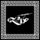
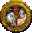

De: La Frikipedia, la enciclopedia extremadamente seria.
De: La Frikipedia, la enciclopedia extremadamente seria. De: La Frikipedia, la enciclopedia extremadamente seria.
| De la serie a quién rezarle: | |||
| Prometeo | |||
| |||
| ¿Quiénes lo adoran? | nadie, los desagradecidos hombres a los que les trajo el fuego pasan de él por miedo a Zeus (espera que llegue Kratos) | ||
|---|---|---|---|
| Área de influencia | el cáucaso, ya que no suele salir mucho de allí | ||
| No puede faltarle | un águila comiéndole las tripas | ||
| ¿Bueno o malo? | bueno para los humanos, malo para los olímpicos | ||
| Sus poderes | engañar y robar fuego | ||
| Dioses y héroes amigos | otros benefactores incomprendidos, como Illidan o Adolfo Suárez | ||
| Dioses y héroes enemigos | Zeus | ||
| 7'5 | |||
Personaje de la mitología griega que arrebató los fosforos el fuego a los admins dioses para entregárselo a los fuma petas hombres, aunque se sopecha que en realidad fue por culpa de un ateniense yonkarra y fumapetas que le pidió lumbre pa calentar el jaco y meterse un pico, de esta forma los griegos pudieron empezar a fumar, quemar bosques y ganar la última Eurocopa
Otras teorias apuntan a que un cierto dia Marleytuga se pokemonizó en Bowser y quemó unas ramas y el agandallado de Prometeo agarró y se los dio a los fuma petas como Bob Marley o la abuela porrera
El tipejo estaba harto de que los pringados imberbes y malparidos de arriba. (Léase, admins dioses) estuvieran calientes y disfrutando del sexo con fuego placer de quemar cosas. Además, el tipo tenía que entregar un proyecto para la clase de ciencias, por lo que decidió tomar robar "prestado sin fecha acordada de devolución" el fuego, para que el hombre y la mujer anduvieran calientes y él le chupara el coño a ella hiciera cosas malas. Los dioses le pillaron in fraganti, pero el tipo es apañado como él solo y salió de la forma más razonable y heroica que había para la época: sobornando a patas.
El tipejo de la leche corrió como él solo y consiguió dejar atrás a los pedazo fascistas malparidos de los dioses y les dió el fuego a los hombres para freír dinosaurios vivos. Los dioses no estaban muy contentos con el capullazo de Prometeo, así que lo sodomizaron encadenado inventando asi el sadomasoquismo encadenaron en una piedra en sabe dios dónde y le obligaron a escuchar el debate del estado de la nación durante toda la eternidad pero Prometeo era duro, y su mente más fuerte que las guindillas, así que, por si no era suficiente, llamaron al tío Sam para que les prestase su águila para que se comiese las tripas del pobre titán. (Era un doble pacto, ya que el avaro del tío Sam no la alimentaba).
Nació por la parte de Navarra en 1499 A.C., aunque otras versiones sitúan su lugar de nacimiento en Atlántida, hijo de Jápeto (gepetto) y Asia (no del continente, si no de la oceánide), se crió en las faldas del Olimpo. A los 8 años conoció a Loki, el cual estaba en Tesalia de vacaciones, y quien le empezó a llevar por el mal camino. Primero robaron las manzanas de jardín de las hespérides, luego robaron las ruedas del carro de Helios, y por último la llave de la puerta del Olimpo. Cronos los descubrió, pero eran cosas de niños, así que no le dieron mucha importancia.
Con el paso del tiempo creció, y durante la titanomaquia se dedicó a robarles armas a los titanes y vendérselas a los olímpicos y viceversa, con lo cual se hizo rico y se compró una casa en Mallorca. Allí conoció a un tal Eustaquio, el cual se convirtió en su mejor amigo.
Poco a poco empezó a sentir especial simpatía por los humanos (sobre todo cuando visitó el pub "Riviera" en A Coruña), pero éstos sufrían el frío por las noches, porque el vago de Helios sólo trabajaba por el día, y era tan avaro que no quería prestarle calor a Selene, así que a Prometeo se le ocurrió una idea.
Otra versión asegura que fué que un día quería meterse unos chutes con un ateniense yonqui llamado Anaxímenes. La que sea, el caso es que lo siguiente sucedió más o menos así
Un día fue a ver a Hefesto a su forja y vió que la herramienta que usaba para fundir el metal estaba caliente. Se lo comentó a su primo segundo y éste le contestó:
-¡Pues claro que está caliente, gilipollas! ¿No ves que es fuego?
Entonces a Prometeo se le ocurrió que si calentaba el metal, también podría calentar el aire nocturno, así que engañó a Hefesto diciéndole que fuera había un perro con cara de mono y a rayas. Su primo segundo no se lo creía, pero al final lo convenció.
Cuándo Hefesto volvió con el animal al interior, vió que Prometeo ya no estaba. Claro, había metido el fuego en una bolsa del Eroski, había salido valientemente por piernas y se lo había llevado a tierras heladas.
Allí en el polo este estuvo probando la efectividad del fuego para encender petas, y al final se lo llevó a Atenas dónde permaneció oculto del vengativo Zeus. Hasta que un mal día ocurrió la tragedia. Prometeo estaba a punto de encender el mayor canuto que os podáis imaginar junto a su hermano Epimeteo, Anaxímenes y Eustaquio, cuándo pasó lo peor que podía pasar. Llegó la policía ateniense y les detuvieron. Finalmente, Hefesto y Zeus se enteraron del paradero del traidor, y resolvieron que había que castigarle.
Decidió el malvado Zeus que éste acto debía ser castigado. Así que los olímpicos resolvieron encadenarle al Cáucaso y obligarle a tragarse el debate sobre el estado de la nación eternamente. Pero Prometeo lo veía siempre que estaba emporrado, así que no surtió ningún efecto. Entonces luego decidieron hacer que un Águila se comiese sus tripas inmortales, lo cual le dolió más.
Hubo en Atenas muchas manifestaciones de "liberad a Prometeo", pero fueron todas duramente reprimidas. Triste final para un gran hombre
Prometeo tenía un hermano llamado Epimeteo, el cual no robó nada, pero un tirano llamado Sasuke Uchiha Zeus quería vengarse de lo que Prometeo había hecho, así que metió todos los males del mundo en una caja de cereales y se la envió a Epimeteo. Pero Epimeteo estaba enfadado con Zeus y le contestó: "¿¡Qué vas a hacer tú, llenarme la nevera?! ¡a la mierda!", y le devolvió su paquete.
El malvado Zeus urdió un efectivo plan de venganza, así que ordenó a Hefesto que fabricase una bella mujer con cuerpo humano para que sedujese a Epimeteo y la caja llegase hasta él, con la orden específica de no abrirla hasta que se lo ordenasen. (Pasa que nunca se acordaron, porque más tarde llegó un tipejo llamado Kratos y estuvieron un poco ocupados). El caso es que Pandora se presentó en casa de Epimeteo diciendo que era una enviada de Zeus para que hiciesen las paces.
Epimeteo fue dónde su hermano para preguntarle qué opinaba, y éste le respondío:
"¡Au, joder, mis tripas, aaaargh, no te fíes de los dioses, ay, ay, ay joder. Aquí hay gato encerrado!"
Claro, que un bellezón como Pandora quisiese acostarse con el poco agraciado Epimeteo daba que pensar, pero el joven titán estaba tan feliz como una perdiz. Aparte, el hermano de nuestro héroe no era precisamente un lumbreras (y Pandora tampoco, ya que Hefesto no sabía fabricar cerebros). Así que cuándo éste le propuso quitarle la virginidad ella pensó que estaba en la caja, así que Epimeteo la abrió, y hala, todo el mal desparramado por ahí. Y la esperanza quedo dentro, porque los dos pringaos salieron tras los males pensando que alguno de ellos era la virginidad de la mujer. La esperanza al final fue encontrada por Alejandro Magno, quien se hizo rico vendiéndola.
Al final de mucho tiempo, un señor llamado Tato convenció a Zeus de sacar a Prometeo de ahí, porque lo iba a necesitar para su lucha contra Chuck Norris, el cual iba a usar el olimpo para grabar una película, pero mientras se dirigía al monte olimpo para luchar en ese prometido λυκόφως των θεών (Ragnarök o crepúsculo de los dioses, cómo decía nuestro amigo Nieztsche), se dio cuen de que se había olvidado la botella de protector solar, y cuándo llegó ya había acabado todo, sólo el sonido del eco en el viento que le susurraba a Prometeo:
"...Eres libre."
Vagando por la tierra en tiempos arcanos conoció a Eustaquio en Mallorca. Otro de sus buenos amigos fué Anaxímenes, que según la tradición obsequió al titán con una ofrenda de Una planta sagrada. Otro de sus amigos fue Joselito, al que ayudó a cruzar el Guadalquivir, y además, desde el 25 de Junio de 2010, es el patrón de la frikipedia, por decisión unánime de un estúpido.
|  Dioses de la Antigua Grecia  |
|---|
|
Ἀφροδίτη · Ἀπόλλων · Ἄρεως · Αρτεμιςαρ · Ἀθηνᾶ · Χρόνος · Δημήτηρ · Διώνυσος · Γαῖα · ᾍδης · Ἥφαιστος · Ἧρα · Έρμῆς · Ἑστία · Ποσειδῶν · Προμηθέας · Περσεφόνη · Οὐρανός · Ζεύς |
Autor(es):